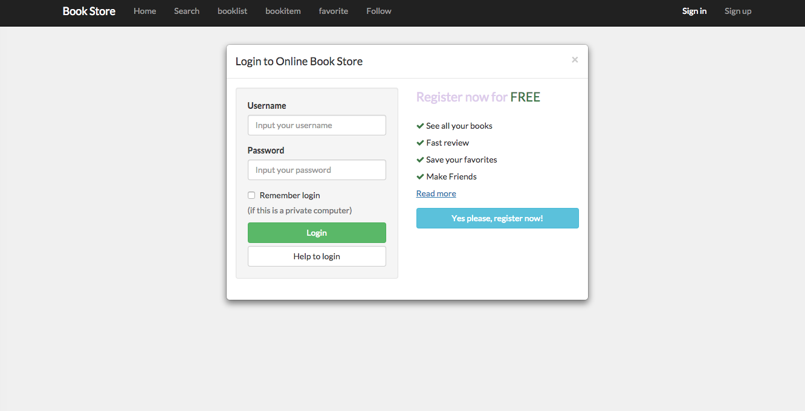
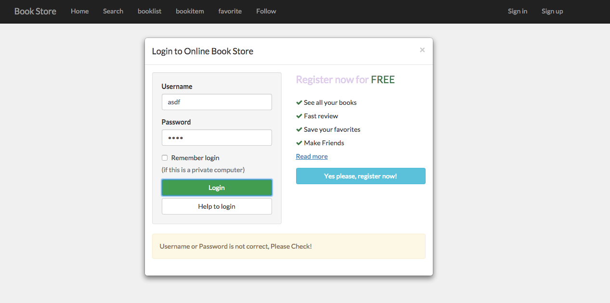

Project Overview
Description:
The topic of project is online book store, which enables users to search books by title, author, description, or any other key words and make comments to any book. The searching functionality is powered by Google Book API. Users are able to follow other users or followed by them after logging in accounts. An authenticated user can add and delete his or her favorite books list as well as view and update profile. But you can only view other users' profile even if you have loggedin the account. The project was built in MEAN stack.
The project includes 12 modules:
- Login Module
- Registration Module
- Searching Module
- Booklist Module
- Bookitem and Comment Module
- User Relation Module
- Profile Module
- Other users' profile Module
- Server Module
- Service Module
- MongoDB Module
Login Module:
The login page is based on Bootstrap,The following are id and class which is used in the UI design of login page:
login-overlay, modal-dialog, modal-content, modal-header,modal-body. The main layout is built on gridlayout of Bootstrap
.The panel, which is a row class, is divided into two equal length part. The left side is for login and the right side
provides button and link to registration and additional information. The login module is built upon passport mechanism, which
is able to provide validation functionality. At the top left of the navigation bar are a sign in button and sign up button, they
will disappear once login successfully.
Here is the snippet of login page:
As the image shown below, a warning bar will pop up if users type into invalid usernames or passwords.
Registration Module:
The registration page is built upon Bootstrap. Users are required to fill out an application form, which includes username, password, firstname, lastname, and email. There is a link at the bottom of the registration box which when clicked will navigate back to the login box.
Here is the snippet of registration page:
Searching Module:
The searching module is also the home page. The main structure is a navigation bar. There is a search box in the center of the page. Any user is allowed to search without having to sign in. However you would not be able to add books to your favorite books list and modify your profile as well as others'. After clicking the ok button, the search result will be shown in a booklist page by using AngularJS service to pass value between page.
Here is the snippet of searching page:

Booklist Module:
The booklist page is the place where a searching results will be parsed. The results will be fetch dynamically, 12 items are shown in each call. Users can click the left arrow button or the right arrow button to request for more data. If you select certain book, then the page will direct to bookitem page, which enables you to view more introduction of this book.
Here is the snippet of booklist page:
Here is the snippet of booklist page, clicking arrow buttons for more data:
Bookitem Module:
The Bookitem page shows more information about the selected book. In this page, an authenticated user is able to make comments below the book and add this book the favorite list.
Here is the snippet of booklist page:
Here is the snippet of comment part, click the green button to toggle the comment box:

Relation Module:
In this page, users can view the list of followers and users that is followed by this user:
Here is the snippet of booklist page:
Profile Module:
In this page, an authenticated user is able to view his or her profile, including username, lastname, firstname, email. On the other hand, by clicking on the yellow button, the user is able to modify the profile in a pop-up page. Besides, the hear-shape button next to the yellow button allows the user to view list of favorite books, and the follower button and the following button are the entrance of viewing related users.
Here is the snippet of profile page:
Here is the snippet of profile editing page:
Here is the snippet of list of favorite books:
Other users' profiles Module:
In this page, users are only allowed to view profiles of other users' having no access to modify. You can follow this user by clicking the follow button
Here is the snippet of booklOther users' profilesist page:
Server Module:
The server.js is the place where the operations like retrieving data from database, providing RESTful API services happen.
Here is the snippet of server.js:
Service Module:
The service.js mainly provides the functionality to passing value from subpages. It is also part of responsability of service.js to make api call.
Here is the snippet of service.js:
MongoDB Module:
In this project, I used MongoDB to store data. I built two colletions to save user information and book information
Here is the snippet of the structure of MongoDB: